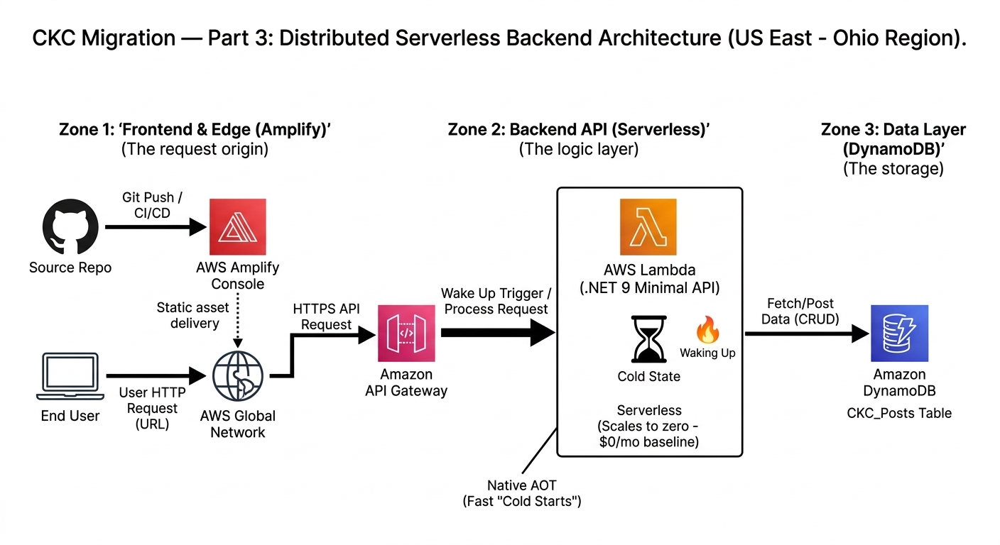

The CKC Migration: The Backend Powerhouse
In our last post, we got a scalable database running with DynamoDB. But a database on its own is just storage. A modern blog needs a dedicated backend to manage things like search logic, processing comments, and protecting sensitive user data. This is where we need a robust backend framework.
The Crossroads
This is a defining architectural moment. Do I stick with my frontend language (JavaScript) and keep everything in one box, or do I introduce a completely new language to build a distributed system? My requirements are simple: it must be enterprise-grade, compiled, and cost absolutely nothing when it’s not in use.
- Option A (Next.js Server Actions): The "Monolithic" Choice. API logic lives inside the frontend code. Great for speed, but limits the demonstration of distributed system knowledge.
- Option B (Serverless .NET 9 via AWS Lambda): The "Architectural" Choice. A separate microservice built with C#. Because we use AWS Lambda, it only "wakes up" when a request hits it, keeping our costs at a $0 baseline.

Serverless Backend Flow: The request triggers API Gateway, which 'wakes up' our compiled C# Lambda.
My Decision: .NET 9 Minimal API via AWS Lambda
The "Why"
This decision is the heart of my portfolio's distributed design. I am decoupling the "Business Powerhouse" (the backend) from the "UI Specialist" (the frontend). By using AWS Lambda with .NET 9, I get an enterprise-grade backend that scales to zero. I also get to leverage Native AOT (Ahead-of-Time compilation), which makes the C# Lambda function start instantly—effectively solving the "Cold Start" lag of older serverless functions.
This approach proves I can manage decoupled systems that mirror how real companies operate, all while maintaining a strict Free Tier budget.
🛠 My Step-by-Step Guide: Creating a .NET 9 Lambda API
I chose a ".NET Minimal API" approach packaged as a Lambda function. Here is how I got the "brain" of the operation running:
Step 1: Install and Initialize
I installed the AWS Lambda templates and initialized the project as an Empty Serverless app.
dotnet new install Amazon.Lambda.Templates
dotnet new serverless.EmptyServerless -n CKC.APIStep 2: Defining the Endpoint
Inside Program.cs, I defined a clean endpoint. This acts as the 'gatekeeper' that receives requests from the frontend and interacts with our cloud services.
var builder = WebApplication.CreateBuilder(args);
// Add AWS Lambda support and DynamoDB services
builder.Services.AddAWSLambdaHosting(LambdaEventSource.HttpApi);
builder.Services.AddAWSService<IAmazonDynamoDB>();
var app = builder.Build();
app.MapGet("/api/posts/{id}", async (string id, IAmazonDynamoDB db) => {
// Fetch the item from our table
var result = await db.GetItemAsync("CKC_Posts",
new Dictionary<string, AttributeValue> { { "PostID", new(id) } });
return result.IsItemSet ? Results.Ok(result.Item) : Results.NotFound();
});
app.Run();
Step 3: Enable Native AOT
To ensure the fastest performance on Lambda, I enabled Native AOT. This compiles the code directly to machine code, reducing startup time significantly.
dotnet add package Microsoft.DotNet.ILCompiler --version 9.0.0Previous: Part 2 — The Data Layer (DynamoDB)